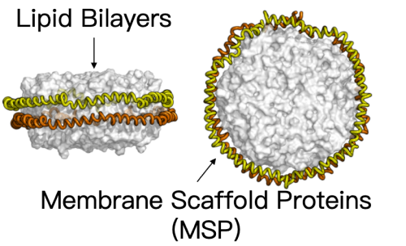
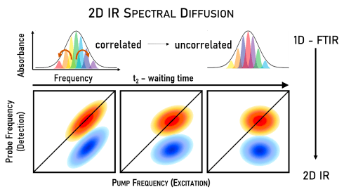
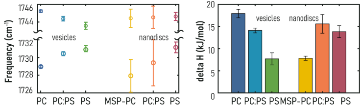

Article
Article
LIPID NANODISCS VERSUS VESICLES:A STUDY OF INTERFACIAL H-BOND STRUCTURE AND DYNAMICS
-
INTRODUCTION
-
Phospho-lipid bilayer nanodiscs are discoidal lipid bilayers of 8-16 nm in diameter
Lipid bilayer nanodiscs have gathered much scientific interest as a stable and tunable membrane mimetic for the study of membranes and membrane proteins
The solvation dynamics in nanodiscs remain underexplored

-
RESEARCH GOAL
-
To determine whether lipid nanodiscs are ideal for structural studies of membrane proteins, we need a full understanding On its hydration environment. Here, we compare various lipid nanodiscs to lipid vesicles by studying the structure and dynamics H-bond network at the lipid interfaces. Our combined experimental methods elucidate the influence of lipid head groups and membrane scaffold proteins on the hydration of lipids nanodiscs.
-
METHODS
-
In ultrafast two-dimensional infrared spectroscopy (2D IR), a pair of laser pulses excites specific vibrational modes in the sample. Then, following a short waiting time, a third laser pulse measures the response of the sample. This results in pump-probe spectrum like the one on the top.
The elongation along the diagonal represents the correlation between the pump and probe frequency. Over time, the correlation is lost due to structural rearrangements of the water. The decorrelation of pump and probe frequencies s measured by center-line-slope analysis.
-
FIGURES AND RESULTS
-
IR peak frequencies indicates similar lipid-water interface in nanodiscs as vesicles
Figure A. Higher heterogeneity in nanodiscs, shown by larger error bars
Eigure B. H-bondlenthalpy of nanodiscs varies dependingon the lipid headgroups

-
CONCLUSION
-
Lipid nanodiscs and vesicles compose a similar interfacial H-bond population and dynamics
Headgroup dependence: H-bond dynamics is not largely affected by the head group, shown by CLS decay time obtained from 2D IR, but the thermodynamics show variations in nanodiscs
Nanodiscs size dependence: despite that nanodiscs show overall similar H-bond dynamics as lipid vesicles, the H-bond dynamics have a size dependence due to the unique properties of rim linids.
-
ACKNOWLEDGMENTS
-
This work has been supported by the Welch Foundation (F-1891) and the National Science Foundation (CHE-1847199).The work presented here is a collaboration between the research group of Dr. Eddy and Dr. Baiz